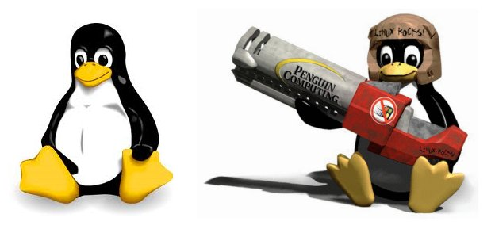
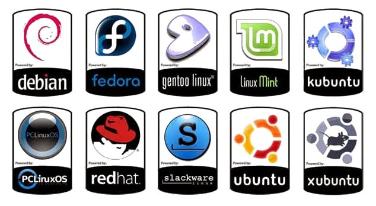
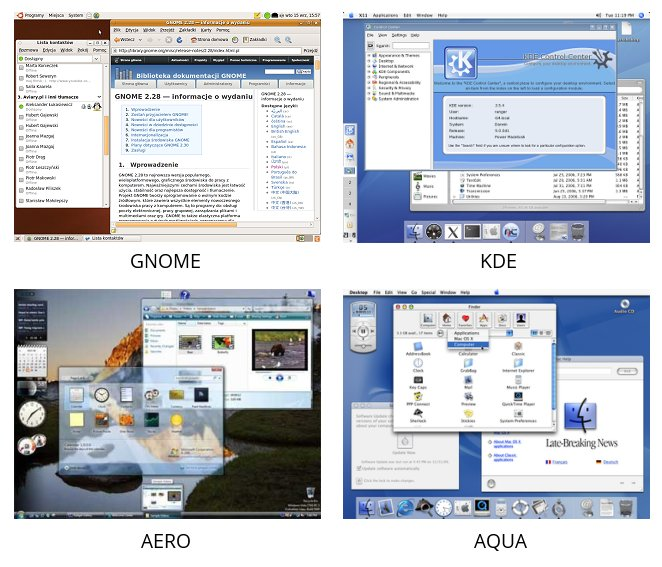

LINUX
Alternatywny dla firmy Microsoft system operacyjny. Opiera się na jądrze – Linuxie. Został przedstawiony światu komputerów w 1991 roku przez fińskiego programistę Linusa Trovaldsa. Zastrzeżonym znakiem towarowym Linuxa jest pingwin.
Ten uniksopodobny system operacyjny został stworzony jako zamiennik komercyjnych systemów proponowanych użytkownikom przez firmę Microsoft. Od samego początku powstania popularyzuje ideę Open Source. Linux jest systemem darmowym, który można ściągnąć z oficjalnej strony internetowej. Co więcej, użytkownik może w każdej chwili wprowadzać zamiany systemowe.
Linux od 1991 roku niesłychanie się rozwinął. Obecnie obsługuje wszystkie komputery, coraz więcej telefonów komórkowych i Wi-Fi.
Ze względu na monopol na rynku softwareowym firmy Microsoft, nie wszystkie programy dostępne na rynku mogą zostać obsłużone przez Linuxa. Odpowiednio posiada on własny pakiet Office
TUX
Maskotka Linuksa, funkcjonująca jako nieoficjalne logo. Jest to objedzony oraz wiecznie uśmiechający się pingwin. Imię pochodzi najprawdopodobniej od słów: Torvalds Unix, często jest wyprowadzana również od angielskiej nazwy smokingu (tuxedo), ponieważ pingwiny wyglądają, jakby nosiły smokingi.
Istnieje też anegdota, która opowiada o wizycie Linusa Torvaldsa w ZOO - podobno autor jądra Linux podobno został ugryziony przez pingwina :) i dlatego wybrał właśnie to zwierzę na maskotkę tworzonego jądra systemowego. Tux stał się symbolem społeczności użytkowników Linuxa i zwolenników wolnego oprogramowania na całym świecie.
JADRO
(ang. kernel) – podstawowa część systemu operacyjnego, która jest odpowiedzialna za wszystkie jego podstawowe zadania: współpracę z rejestrami procesora, pamięcią (operacje zapisu/odczytu) oraz urządzeniami zewnętrznymi. Z budowy jądra wynikają jego cechy, takie jak: wielozadaniowość, wielowątkowość, wielodostępność, wywłaszczalność.
LICENCJA GNU GPL
Zasady licencyjne określone przez konsorcjum Free Software Foundation. Jeśli ktoś wprowadza do obiegu oprogramowanie zawierające jakąkolwiek część podlegającą licencji GPL, to musi udostępnić wraz z każdą dystrybucją binarną jej postać źródłową. Jądro Linux jest rozprowadzane na licencji GNU GPL. Celem licencji GNU GPL jest zagwarantowanie użytkownikowi swobody udostępniania i zmieniania wolnego oprogramowania, a więc danie pewności, iż oprogramowanie jest wolno dostępne dla wszystkich użytkowników.
System Linux nie jest oprogramowaniem będącym własnością ogółu (public domain). Prawa autorskie do poszczególnych źródeł części składowych Linuxa należą do różnych autorów poszczególnych części kodu. Jednakże Linux jest oprogramowaniem w wolnym obiegu w tym sensie, że jego użytkownikom wolno go kopiować, zmieniać i stosować w dowolny sposób oraz rozdawać własne kopie bez ograniczeń. Ograniczenia tej licencji wynikające z zasad licencji GNUGPL nie zakazują tworzenia ani sprzedawania wyłącznie binarnych dystrybucji oprogramowania, jeżeli tylko każdy, kto otrzymuje kopie binarne, będzie miał szansę uzyskania również kodu źródłowego za rozsądną opłatą dystrybucyjną.
Nazwa GNU (ang. GNU is Not Unix) pochodzi od tzw. Projektu GNU – przedsięwzięcia mającego na celu stworzenie kompletnego, wolnego systemu operacyjnego GNU, zapoczątkowane w styczniu 1984 roku przez Richarda Stallmana (hackera o pseudonimie RMS, twórcy ruchu na rzecz wolnego oprogramowania, autora m.in. kompilatora GCC).
DYSTRUBUCJA
(ang. distro) cały system operacyjny oparty o jądro Linux (czyli zestaw złożony z jądra, oprogramowania narzędziowego i użytkowego oraz instalatora. Przykładowe logotypy distros ukazano poniżej.
Na wybór konkretnej dystrybucji Linuxa ma wpływ bardzo wiele subiektywnych czynników: łatwość użytkowania systemu, rozmiar obrazu dystrybucji (w tym minidystrybucje), minimalne wymagania sprzętowe, osobiste preferencje, przeznaczenie systemu, łatwość instalacji, dostępna wersja językowa itd. Polecam zajrzeć na stronę Distro Watch.
GUI
Często nazywany też środowiskiem graficznym – określa sposób prezentowania informacji przez komputer oraz interakcji z użytkownikiem. System operacyjny pozbawiony środowiska graficznego to system tekstowy. Systemy komunikujące się z użyciem środowiska graficznego to systemy graficzne.
Przykładowe środowiska GUI: GNOME, KDE, LXDE, UNITY, MATE (Linux/Unix), AQUA (MacOS), AERO (Windows).
POWLOKA SYSTEMOWA
Program pośredniczący we współpracy użytkownika z jądrem systemu, ma postać wiersza poleceń. Jądro systemu zawiera wszelkie podprogramy potrzebne do przeprowadzania operacji wejścia i wyjścia, zarządzania plikami itp. Powłoka pozwala korzystać z tych podprogramów za pomocą wiersza poleceń. Poza tym, powłoki obsługują również język programowania. Programy napisane w języku powłoki nazywane są zwykle skryptami lub skryptami powłoki. Powłoki linuxowe zestawilem poniżej
BASH
Powłoka systemowa napisana dla projektu GNU. Program jest rozprowadzany na licencji GNU GPL. BASH to jedna z najpopularniejszych powłok systemowych.
Jest domyślną powłoką w większości dystrybucji systemu GNU/Linux oraz w systemie Mac OS X od wersji 10.3, istnieją także wersje dla większości systemów uniksowych. Nazwa jest akronimem od Bourne-Again Shell (angielska gra słów: fonetycznie brzmi tak samo, jak born again shell, czyli odrodzona powłoka). Wywodzi się od powłoki Bourne'a sh, która była jedną z pierwszych i najważniejszych powłok systemu UNIX.
CSH
(od ang. C shell) jest jedną z systemowych powłok uniksowych. Została stworzona przez Billa Joya dla systemu BSD. Nazwa C shell jest grą słów: dosłownie oznacza powłokę [o składni] języka C, fonetycznie da się to jednak odczytać sea shell, czyli muszelka, taka ciekawostka naukowa xD
Powłoka ta pochodzi od powłoki SH. Powłoka C shell wniosła wiele ulepszeń w stosunku do SH, takich jak m.in. aliasy i historia komend. Niestety jej możliwości skryptowe pozostawiają wiele do życzenia.
KSH
(ang. Korn shell) to powłoka unixowa stworzona przez Davida Korna z AT&T Bell Laboratories w połowie lat osiemdziesiątych. Powłoka KSH jest całkowicie kompatybilna wstecz z powłoką SH, zawiera także wiele elementów z powłoki CSH – takich jak historia wpisanych komend.
KSH zawiera wbudowany system obliczania wyrażeń arytmetycznych oraz zaawansowane funkcje skryptów podobne do tych używanych w bardziej zaawansowanych językach programowania, takich jak AWK, Perl. Korn Shell jest sprzedawany w postaci kodu źródłowego oraz plików binarnych – przez AT&T i Novell oraz przez inne firmy poza granicami USA. PDKSH jest implementacją KSH na licencji public domain (czyli "dla dobra publicznego").